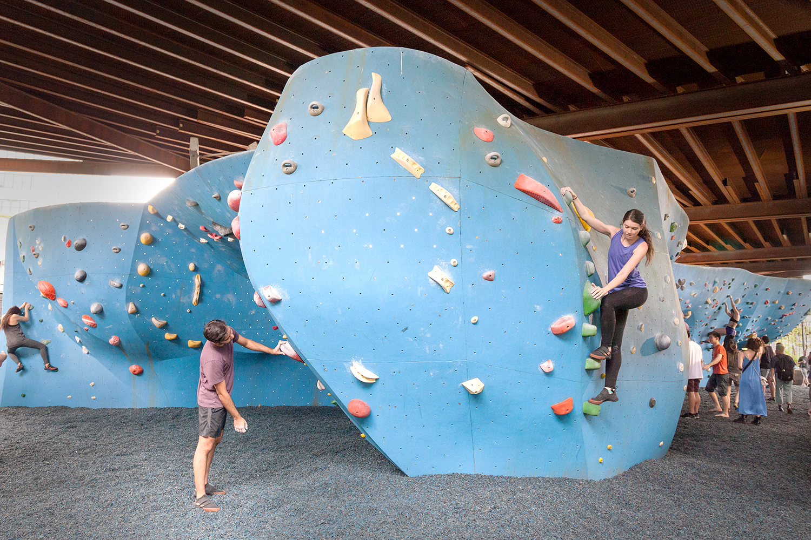
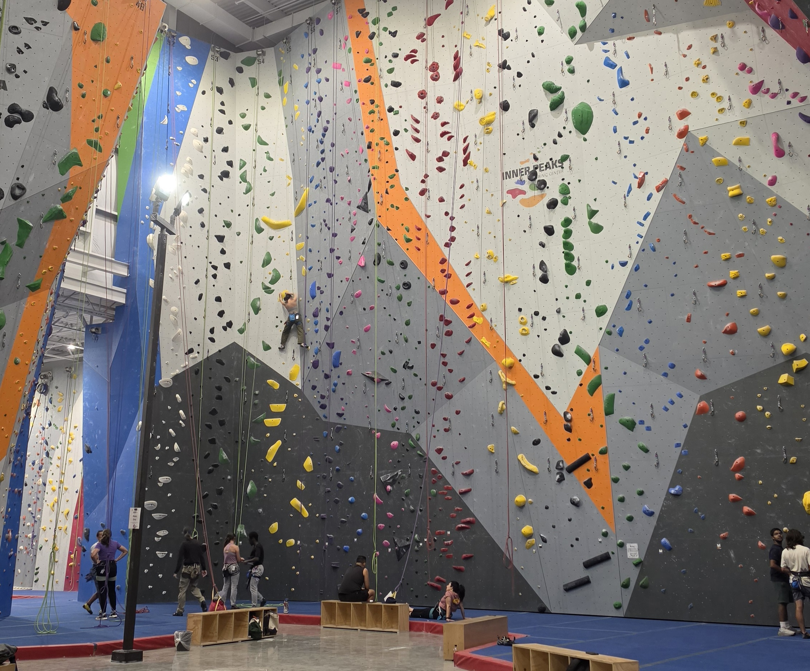
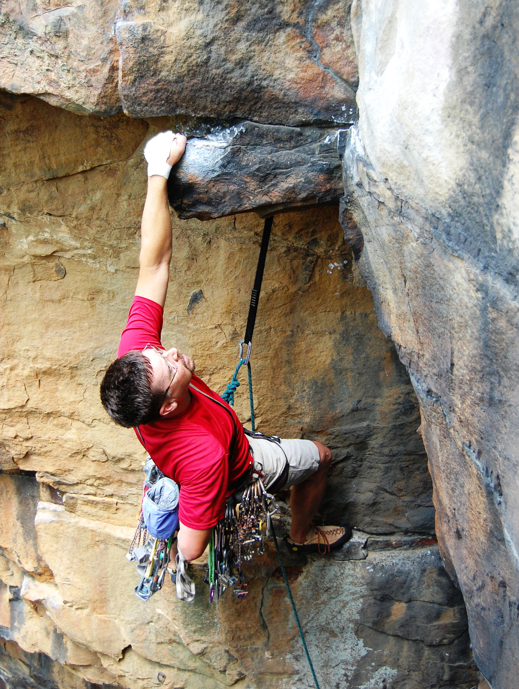

Types of Climbing
One of the unique things about rock climbing is the different types and styles that one can choose to engage with, all ranging in skills and difficulty. The main types are bouldering, sport climbing, and traditional (trad) climbing. Bouldering is often the most approachable for beginners, followed by sport, then trad.
Bouldering

Bouldering is a style of climbing in which a climber scales a rock (a.k.a., a boulder) without tying into a rope or otherwise securing themselves. These climbs are generally no higher than about 15 feet, so with proper padding, a skillful fall will not seriously injure the climber. The climber starts on the ground, then the climb is completed when the climber can successfully establish themselves at the top. To stay safe, outdoor boulderers lay out pads made for bouldering called crashpads to fall on, and gyms line their floors with padding underneath and around the bouldering areas. Although not necessarily required for this style of climbing, it is recommended to bring a trusted climbing partner when climbing outside in case of injury (and for moral support).
The difficulty of boulder climbs is rated on a V-scale in America, or the comparable Fontainebleau scale popular in Europe. The V-scale starts at VB for the most introductory climbs (great for your very first climb, especially young kids!), then V0, V1, V2, up through V18 at the most difficult. Why stop there? V18 is the highest grade right now, and there is only 1 climb in the world with this rating! The climb Exodia was proposed a V18 in November 2025. There is always room for advancement in rock climbing; new V-grades are added whenever a new, more difficult climb is discovered.
Bouldering in the gym versus outside are technically similar but have some slight transferable differences to be aware of. Outside, someone completes (sends) a boulder when they are able to stand on top of it, which is called topping out. Some gyms have sections of the wall where you can top out, usually by climbing over the ledge onto a platform, but most of the time you simply establish on the last hold of the climb. This means you must be stable enough to put both hands on the last hold (match) without falling. In other words, you can't (and shouldn't) lunge yourself at the last hold and pray you touch it before plummeting to the ground.
Another difference to note between indoor and outdoor bouldering is how to know the route to the top. Outdoors, one boulder may have several different routes to get to the top at varying levels of difficulty. The path and grades are generally determined by the climbers who first sends the route and agreed upon by others who climb the same route after them. Then the most popular routes are shared in climbing guide books, online forums, and even apps. Inside, however, the routes are determined by the people who screwed the holds into the wall: the route setters. In most gyms, the route sticks to one color hold from the start to the finish, with a marker at the start letting you know what the setters say the grade is. Some gyms even indicate grades by the color of holds (e.g., red holds mean V3-V4, yellow holds mean V7-V8). Mainly to appeal to their customer base, most climbing gyms will not set any boulders more difficult than V10 or V11.
Bouldering is an excellent starting point for new climbers. The barrier to entry is very low, requiring little to no equipment or knowledge to start. It's a great way to begin to develop the techniques required for more difficult climbing, and provide exposure to being a little higher off the ground before getting on the tall walls for sport climbs.
Sport Climbing

Sport climbing is a style of climbing in which a climber ascends routes secured to a rope, with permanently drilled-in bolts guiding the way up. There are two sub-categories of sport climbing: top rope and lead. Top rope climbing is more of an entry point into sport climbing. The stakes are lower if you fall, and there is less pressure on the person catching you. Unlike bouldering, where you can pop some headphones in and just climb, sport climbing does require a buddy.
As mentioned, in sport climbing, you tie your harness to a rope to catch you if you fall, and to bring you back to the ground when you're done. The main difference between top rope and lead climbing lies in where the rope goes. In top rope, you are tied into one end of the rope, and your buddy, or your belayer, is attached to the other side. Between you both, the rope travels all the way up the climb to an anchor point. As you climb, your belayer pulls the extra rope (the slack) out so when you let go of the wall (whether by accident or on purpose), you are suspended in the air right where you are. The belayer can lower you safely back down to the ground with their belay device. This makes top rope a very easy style of climbing to execute, as long as both the climber and belayer are educated on the functions of the equipment.
The natural progression from top rope is to lead climb, which is generally what is meant by "sport climbing." There is more technicality and risk in lead climbing than top rope, so most gyms require a climber to show they have knowledge of top rope climbing before allowing them to lead climb. In this style, the climber is once again tied into one end of the rope, but the belayer is clipped in just a few feet down the line rather than at the other end. The climber brings the rope up with them and attaches their rope to the bolts affixed to the wall along the way. The belayer, in turn, gives slack, rather than takes it out, so the climber can clip in. If you let go of the wall while lead climbing, you will fall at least double the length of rope between the last anchor point and your knot in your harness. So, if you are 5 feet above your last clip, you will fall at least 10 feet, depending on how your belayer reacts. It may sound scary at first, but once you know how it works, and the more often you practice, the more comfortable you will become.
Grading of sport climbs looks a little bit different than bouldering. The two most common grading scales are the Yosemite Decimal System (YDS) and French. YDS is used in North America, where the French scale is more common in Europe and Asia. The YDS starts at 5.0 for the most basic climbs, and progresses through 5.15. There are intermediate grades, a through d, starting at 5.10 to break it up further (e.g., 5.10a is easier than 5.10d). The French scale goes from 1 through 9. Starting at 5 you begin to see a-c letters (e.g., 5a or 10c), but the French scale also uses a plus sign as further increments (e.g., 7a is slightly easier than 7a+). Most American gyms set between the 5.6 and 5.13 range, and rarely up to 5.14.
Comparing indoor to outdoor sport climbing is not much different than for bouldering. The concepts of the route setting are similar, with colors and tags marking the way for indoor routes, and discovery for outdoors. A climber requires more gear for outdoor climbs than indoor; gyms provide rope for top rope, and bolts/carabiners for lead routes. Outside, the climber has to bring all the supplies except the bolts, which are still permanently drilled into the rock by professionals, and maintained by the area's climbing organization. For this reason, it may benefit to start inside, or to make friends with an experienced climber first before heading outside.
A new climber might be drawn to sport climbing over bouldering for a couple of reasons. The idea of being attached on top rope may seem more appealing than trusting yourself to fall 10 feet off a bouldering wall. Sport climbing (top rope specifically) also allows for more trial and error without starting over if you make a mistake. Many might also find the steep overhangs in the bouldering area intimidating or frustrating if they aren't already physically in shape. The flatter walls on sport climbs can be more accessible. If you're a thrill-seeker, it may also empower you to climb 40 feet in the air and look down to see what you've just accomplished!
Trad Climbing

Traditional climbing, or trad climbing, is definitely not a style made for beginners, but is the root of sport climbing. In this style, the climber places their own anchors called cams and nuts to secure themselves on the way up the wall. It requires some serious skill, confidence, and patience. But, before there were organizations to drill holes into rocks, this is how people climbed.
The gear involved in trad climbing is more complex than required for sport climbing. Before even beginning a climb, a climber must have a wide array of different protection devices to ensure their safety. Rather than attaching to pre-existing bolts, a trad climber places their own gear as they climb up the wall. Advanced training and knowledge is required to know where and how to place the gear. Trad climbing is outdoors only—no practice in the gym for this style.
If you've been climbing for a while and just can't get enough of that thrill, trad climbing might be for you. You probably already have the climbing technique, safety mindset, and hopefully a group of adrenaline junkies to come along. Just keep in mind that trad climbing comes with a lot more risk than bouldering and sport climbing. You're relying not only on your gear, but also your own ability to place it. If you're confident enough, there is also the option to go with no gear at all...